- Module này giúp bạn bổ sung thêm 1 tiện ích lên website của mình, giúp khách truy cập quen thuộc thường xuyên lui tới hơn (để sử dụng dịch vụ khi cần).
- Mỗi khi có người sử dụng dịch vụ, bạn sẽ được hưởng chiết khấu giới thiệu dịch vụ (khoảng 2,5% giá trị dịch vụ mà khách hàng sử dụng từ các nhà cung cấp trên RADA).
Bạn cần có 1 website sử dụng NukeViet, sau đó bạn cài module RADA lên là sử dụng được.
Bạn có thể tìm thấy module RADA tại NukeViet Store: https://nukeviet.vn/vi/store/modules/rada/
Việc cài đặt module RADA có thể tiến hành cài đặt như cài đặt gói module thông thường khác. Nếu chua từng cài đặt Module cho NukeViet, bạn có thể tham khảo hướng dẫn dưới đây:
Bước 1: Bạn tải module RADA về từ NukeViet Store.
Bước 2: Sử dụng tài khoản God Admin, login vào Admin Control Panel, sau đóclick vào menu “Mở rộng” (menu ngang) để truy cập vào trang quản lý ứng dụng.
Bước 3: Tại trang quản lý ứng dụng, Nhấp nút “Cài đặt gói ứng dụng”, sau đó nhấp nút “Browse…”, tìm và chọn gói cài đặt module RADA vừa tải về, sau đó ấn nút “Tải lên”. Hệ thống sẽ kiểm tra tính hợp lệ của gói module này.
Bước 4: Hệ thống thông báo “Ứng dụng này an toàn với hệ thống của bạn. Nhấp Vào đây để tiến hành giải nén và cài đặt.”, bạn click vào link ở chữ “Vào đây” để chuyển sang trang cài đặt.
Bước 5: Hệ thống sẽ thông báo “Quá trình cài đặt thành công. Hệ thống sẽ tự động chuyển bạn sang khu vực thích hợp ngay bây giờ.” Bạn chờ trong giây lát để được chuyển qua trang “Thiết lập module mới”.
Bước 6: Tại trang “Thiết lập module mới” bạn sẽ thấy Module RADA sẽ nằm trong danh sách “Các module hệ thống”, Bạn nhấp nút “Thiết lập” nằm ở cột cuối cùng cùng hàng module RADA.
Bước 7: Tại trang “Sửa module “rada””, bạn thay lại các thông tin phù hợp (nếu cần). Sau đó nhấp nút “Thực hiện” để lưu thay đổi.
Để theo dõi và ghi nhận hoa hồng bạn cần đăng ký tài khoản RADA, cách đăng ký đơn giản nhất là cài ứng dụng RADA lên điện thoại của bạn
App RADA cho iOS: https://itunes.apple.com/vn/app/rada-service-around/id1064891644?mt=8
App RADA cho Android: https://play.google.com/store/apps/details?id=customer.rada.com.radacustomer
Sau khi cài đặt, bạn đăng ký tài khoản RADA như sau:
Bước 1: Mở App Rada trên điện thoại (Đảm bảo điện thoại có kết nối internet).
Bước 2: Điền số điện thoại và mật khẩu (2 lần), sau đó nhấn nút “Bước tiếp theo”.
Lưu ý: Bạn cần nhớ mật khẩu để sau này đăng nhập hệ thống cũng như kiểm tra giao dịch trên web.
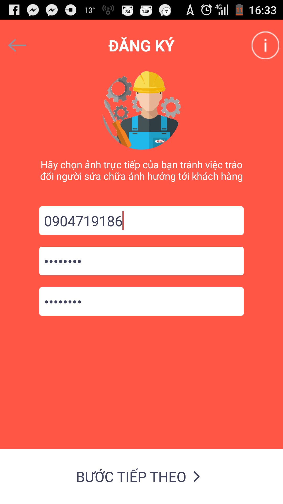
Bước 3: Điền tên bạn và mã giới thiệu là “nukeviet”, sau đó nhấn nút “Hoàn tất đăng ký”. 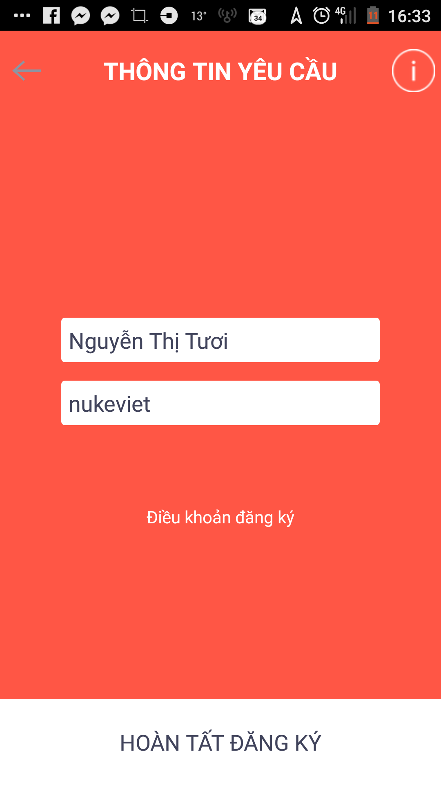
Bước 4: Kích hoạt tài khoản 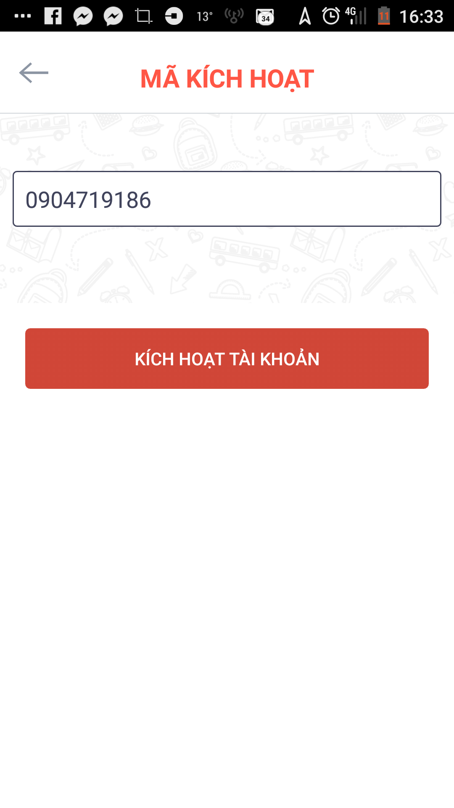
Bước 5: Lấy mã giới thiệu
Mở ứng dụng bạn sẽ thấy giao diện như sau:
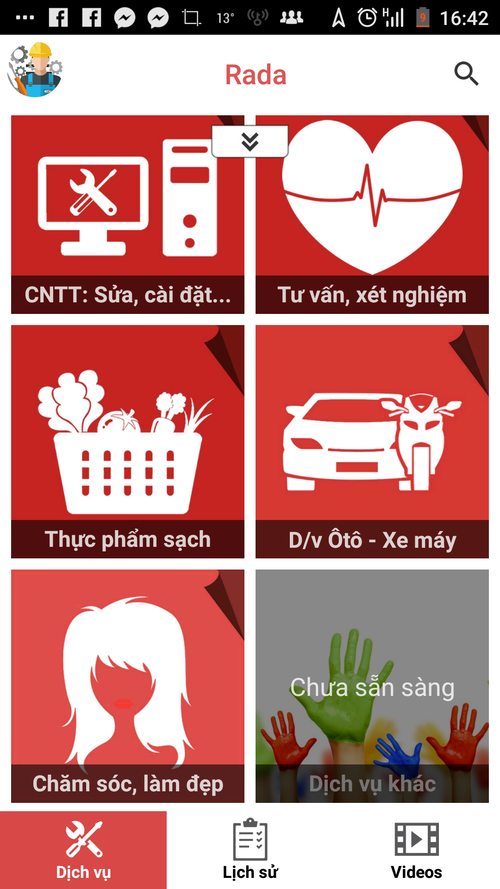
Click vào icon hình người ở góc trên bên trái ứng dụng điện thoại để vào menu “Cài đặt” như hình dưới. Bạn sẽ thấy mã giới thiệu. Ví dụ ở đây là 19089, bạn cần ghi lại mã này để sau này sử dụng.
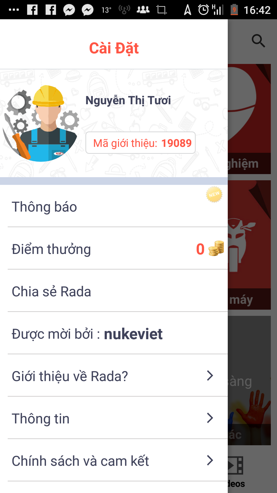
Bước 6: Kích hoạt chế độ hợp tác với RADA:
Bạn kéo xuống phía dưới menu “Cài đặt”, chọn mục “Gọi hộ dịch vụ”.
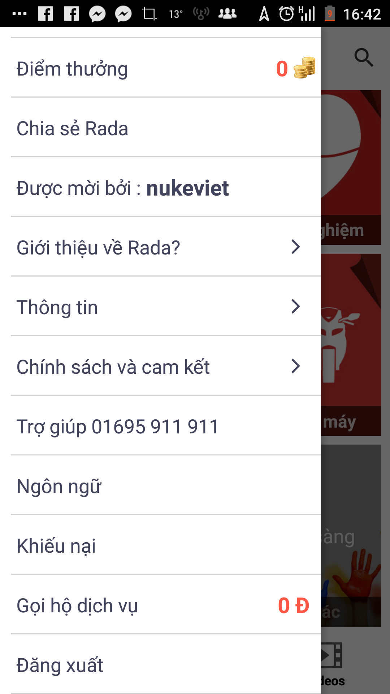
Ứng dụng sẽ mở trang web như hình dưới. Bạn nhấp vào nút “Tôi đồng ý”.
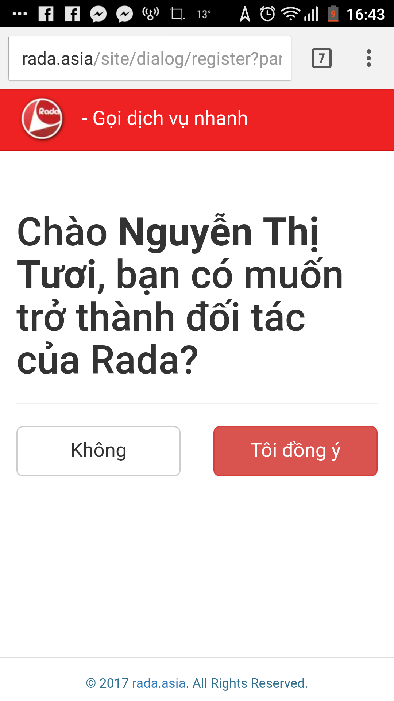
Màn hình web chuyển sang giao diện sau là bạn đã thành công:
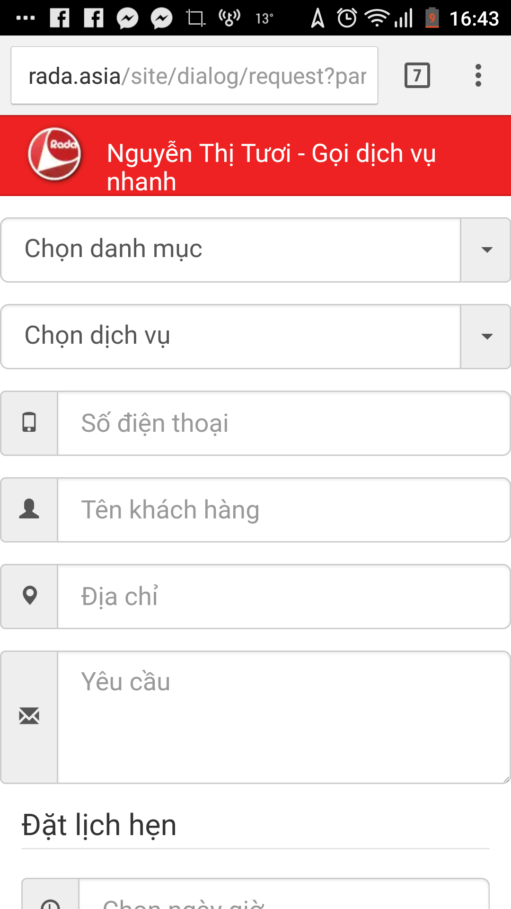
Sau khi cài đặt module bạn kích hoạt gọi dịch vụ RADA trên website này bằng các bước sau đây:
Bước 1: Ra ngoài trang chủ (sau khi login Admin Control Panel). Đưa chuột lên menu quản trị “cụm nút trôi nổi ở bên cạnh trái website” và chọn menu “Bật kéo thả block” (xem hình dưới)
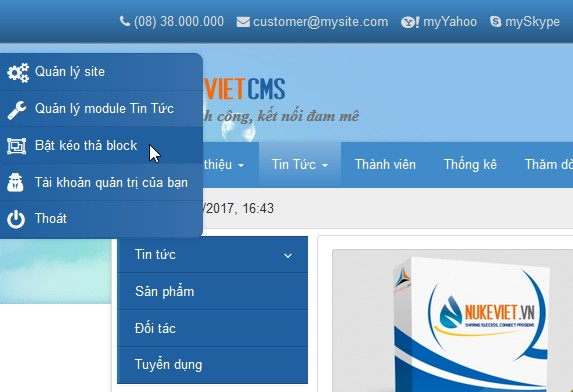
Bật kéo thả block
Bước 2: Thêm block mới vào một khu vực bất kỳ bằng cách click chuột vào icon màu cam bất kỳ (icon này xuất hiện ở góc trái phía dưới tất cả các khu vực có thể thêm block).
Bước 3: Tại cửa sổ popup cấu hình thêm block bạn khai báo các thông tin sau (các thông tin khác để mặc định):
- Chọn kiểu block: Rada/ Global RADA
- Mã Partner: Bạn điền mã giới thiệu lấy ở bước 5 bên trên. (Nếu để mã cũ thì khách truy cập vẫn gọi được dịch vụ nhưng hệ thống không ghi nhận doanh số hoa hồng cho bạn)
- Template: No_title
- Áp dụng cho module: Tất cả các module.
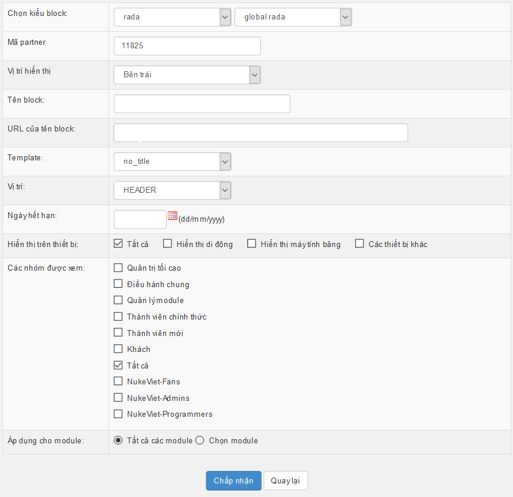
Cấu hình block RADA
Sau đó bạn nhấp nút “Thêm block”. Hệ thống sẽ báo “Thêm block thành công”, bạn nhấp OK.
Nút gọi RADA sẽ được chèn vào góc bên trái website như hình dưới. Khách truy cập có thể click vào icon RADA để gọi các dịch vụ của RADA qua web.
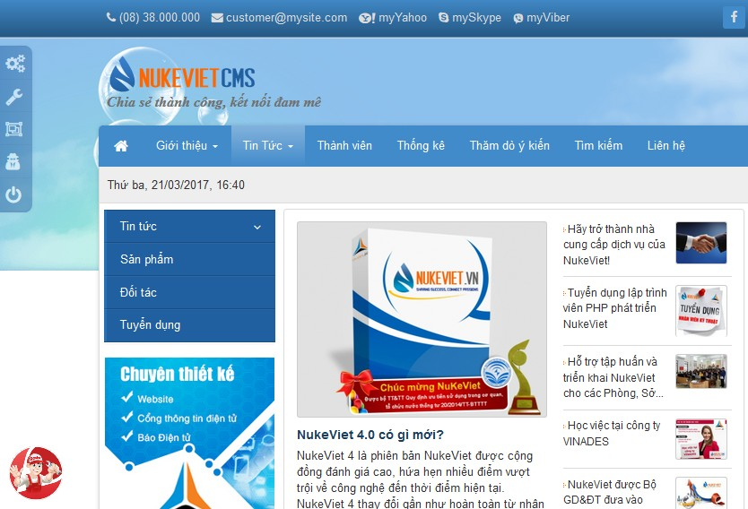
Icon RADA trên web (luôn hiển thị ở góc trái phái dưới website)
Bạn có thể kiểm tra bằng cách sau:
Cách 1: Mở ứng dụng, truy cập menu “Cài đặt”, vuốt xuống dưới để xem số tiền tích lũy trong mục “Gọi hộ dịch vụ”
Cách 2: Truy cập http://apprada.vn/site/login
Đăng nhập bằng số điện thoại và mật khẩu của bạn.
Sau khi đăng nhập thành công, click vào tên bạn (hiển thị ở góc trên, bên phải website), sau đó vào menu “Đơn hàng” (hoặc click vào đây) để xem chi tiết các giao dịch.
Hiện giờ RADA ủy quyền cho VINADES - Công ty cổ phần phát triển nguồn mở Việt Nam thanh toán hoa hồng cho các bạn.
Các giao dịch tích lũy với số dư > 50.000 VNĐ sẽ được thanh toán cho các bạn vào ngày 15 hàng tháng. Các bạn qua Công ty VINADES để nhận tiền mặt hoặc liên lạc ketoan@vinades.vn để nhận chuyển khoản (Phí chuyển khoản hoặc phí chuyển tiền bằng các phương thức khác bạn sẽ chịu)